Neural Drift website: parity report
Vicky's one-file build (Neural_Drift_Website.html, 9 Oct 2026, 33 MB) against the multi-page conversion (neuraldrift-v3/). Tested 10 Oct 2026 in Google Chrome. Thumbnails: left = original, right = converted.
1 · Inventory: nothing missing
- PASS 24 pages, each at its own address (23 sections plus the GE6 engine page).
- PASS 40 media files extracted byte-for-byte (22.7 MB): 11 films × 2 formats (AV1, H.264), 11 posters, 6 photos, chip image. Plus 3 fonts and 3 icons.
- PASS Text of every page, header and footer identical (automated word-for-word comparison).
- PASS 32 internal links and all 40 media files resolve; none broken.
2 · Look and content, page by page
Each cell: text, header, footer, images, films, links, page height, pixel difference ≤ 0.5%, no errors.
| Page | 1440 | 1024 | 768 | 390 | Desktop (A | B) | Phone (A | B) |
|---|---|---|---|---|---|---|
/ | PASS0.0% | PASS0.0% | PASS0.0% | PASS0.0% |  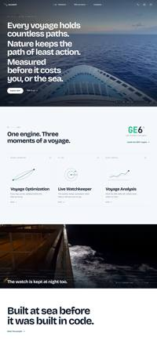 |  |
/ge6/voyage-optimization | PASS0.023% | PASS0.007% | PASS0.015% | PASS0.0% | 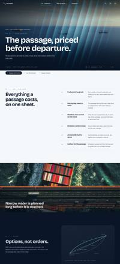 |  |
/ge6/live-watchkeeper | PASS0.029% | PASS0.028% | PASS0.019% | PASS0.011% | 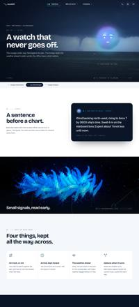 |  |
/ge6/voyage-analysis | PASS0.032% | PASS0.03% | PASS0.021% | PASS0.022% | 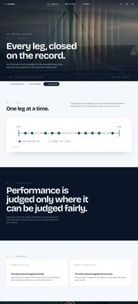  |  |
/serve/merchant-ships | PASS0.166% | PASS0.002% | PASS0.001% | PASS0.001% | 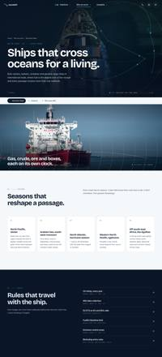 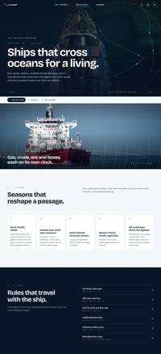 |  |
/serve/onshore | PASS0.006% | PASS0.013% | PASS0.004% | PASS0.003% | 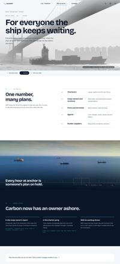 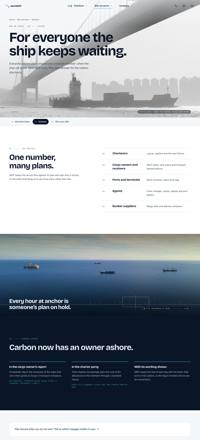 | |
/serve/who-uses-ge6 | PASS0.0% | PASS0.0% | PASS0.0% | PASS0.0% |  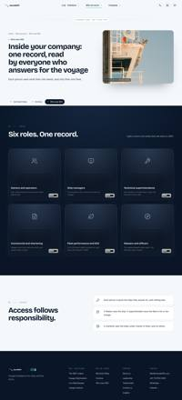 |  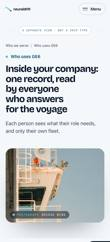 |
/company/about | PASS0.088% | PASS0.056% | PASS0.022% | PASS0.029% | 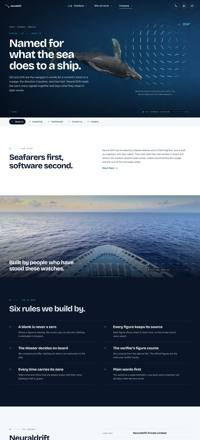 | 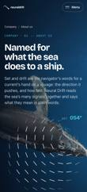  |
/company/leadership | PASS0.0% | PASS0.0% | PASS0.0% | PASS0.0% |  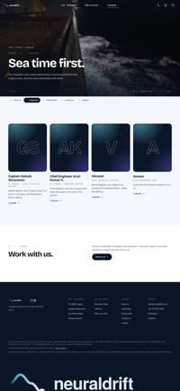 | |
/company/testimonials | PASS0.0% | PASS0.0% | PASS0.0% | PASS0.0% | 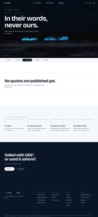  |  |
/company/contact | PASS0.0% | PASS0.0% | PASS0.0% | PASS0.0% | 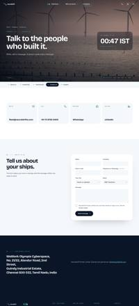  |  |
/company/insights | PASS0.003% | PASS0.002% | PASS0.001% | PASS0.001% |  | |
/company/insights/imo-net-zero-framework | PASS0.0% | PASS0.0% | PASS0.0% | PASS0.001% |  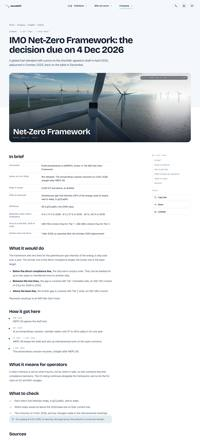 | |
/company/insights/cii-2027-2030 | PASS0.0% | PASS0.0% | PASS0.0% | PASS0.0% |  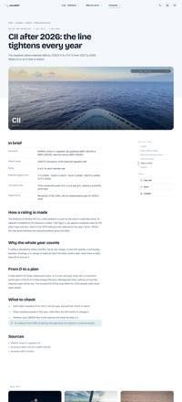 |  |
/company/insights/eu-ets-2026 | PASS0.0% | PASS0.0% | PASS0.0% | PASS0.001% |  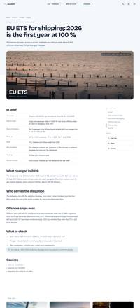 | |
/company/insights/fueleu-compliance-year | PASS0.0% | PASS0.0% | PASS0.0% | PASS0.0% | 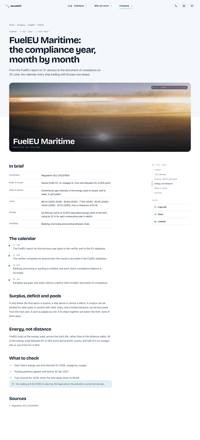  |  |
/company/insights/imo-dcs-2026 | PASS0.0% | PASS0.0% | PASS0.0% | PASS0.0% |  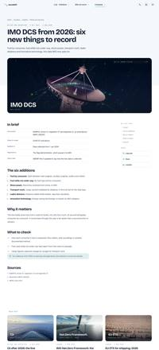 | 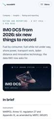  |
/company/insights/biofouling-border-check | PASS0.0% | PASS0.0% | PASS0.0% | PASS0.0% | 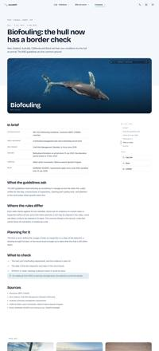  |  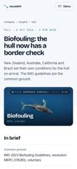 |
/company/insights/vlsfo-co2-factor | PASS0.0% | PASS0.0% | PASS0.0% | PASS0.0% | 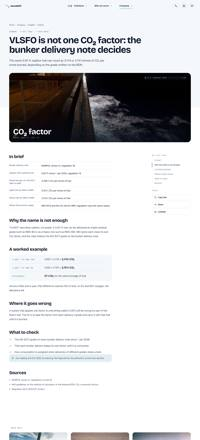  |  |
/company/insights/emission-control-areas-2025-2028 | PASS0.0% | PASS0.0% | PASS0.0% | PASS0.0% |  | 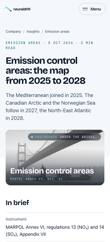 |
/company/insights/solas-voyage-planning | PASS0.0% | PASS0.0% | PASS0.0% | PASS0.0% |  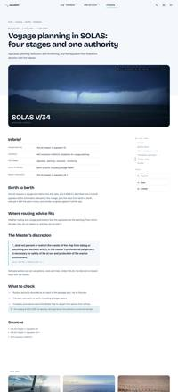 |  |
/privacy | PASS0.0% | PASS0.0% | PASS0.0% | PASS0.0% |  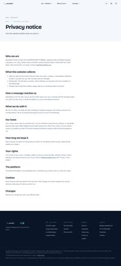 |  |
/404 | PASS0.0% | PASS0.0% | PASS0.0% | PASS0.0% |  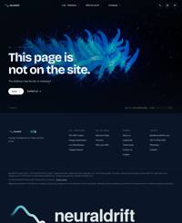 |  |
3 · Behaviour
- PASS Films play as you scroll, same rendition as the original. Home: cruising (playing, av1-720), midnight (playing, av1-720). Voyage Optimization: anchorage (playing, av1-720).
- PASS Home scroll story steps through its three lines ([0, 1, 2]).
- PASS Desktop mega menus open: ge6, serve, company. Current section is marked (ge6).
- PASS Phone menu opens with 16 links.
- PASS GE6 engine page opens in its frame ("GE6° — Voyage intelligence by Neural Drift"); its link back lands on
/ge6/voyage-optimization/. - PASS Old links like
/#/company/insights/eu-ets-2026redirect to/company/insights/eu-ets-2026/. - PASS No JavaScript errors on any of 26 pages.
4 · Page load (mobile, fast 4G 9 Mbps, cache off)
| Page | Original | Converted | |
|---|---|---|---|
/ | 30.2 s · 32.0 MB | 1.3 s · 1.8 MB | 23× faster |
/ge6/voyage-optimization | 30.2 s · 32.0 MB | 2.1 s · 1.8 MB | 14× faster |
/company/insights/eu-ets-2026 | 30.1 s · 32.0 MB | 1.3 s · 0.9 MB | 24× faster |
/company/contact | 30.1 s · 32.0 MB | 1.2 s · 0.7 MB | 26× faster |
The original downloads all 33 MB on every page. The converted site loads only that page's text and scripts, then each film or photo as it nears the screen.
5 · What changed (and nothing else)
- Split into one HTML file per page; CSS, scripts, fonts, icons and media moved into separate files. Markup, CSS rules and scripts unchanged.
- Soft cross-fade between pages added in CSS (
@view-transition), standing in for the one-file build's in-page swap. - Site script: 11 small, listed edits, all about addresses and files: GE6 engine page opened from its own file; films keep the one-file rendition set (720p AV1 + H.264), now as files; in-page # links still scroll; #/ links go to the page; links from the GE6 engine page go to real addresses; media read from files, not the hidden store; menu groups and current-page marks compare addresses; pages come from the address bar, not #/ routes; start: show the page this address belongs to.
- Each page has its own title, description, canonical link and share tags (taken from Vicky's per-page data). A
sitemap.xmlandrobots.txtwere added.
6 · Not yet covered
- Browsers: tested in Chrome only. Safari, Firefox, Edge and real iPhone/Android checks are still to do.
- Hosting, security headers, SEO/AEO additions and the deploy workflow are the next stage, done after Vicky signs off this conversion.
- Home page is 1.8 MB because its first film starts straight away; it can be held to the poster on slow connections later if wanted.